- 기존에 수업에서 들은 내용에는 text를 추가하는 내용까지 였습니다.
- 그래서 이미지를 넣는 방법에 대해서 한번 정리해봤습니다.
- 위 테이블의 우측과 같이 이미지와 이미지의 파일명이 나타나도록 변경해보도록 하겠습니다.
- 추가한 내용을 좀 더 크게 보겠습니다.
- 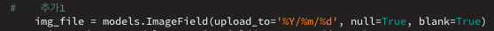
- 이미지를 model에 추가할 때는 ImageField를 사용합니다.
- 추가한 내용을 좀 더 크게 보겠습니다.
- ImageField의 괄호 안에는 upload_to를 넣어줘야 하는데, 이것의 사용 용도는 어떤 위치에 넣을 것인가! 입니다.
- 예를 들어 upload_to="board/image"라고 넣는다면
- 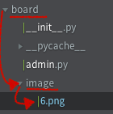
- 이렇게 이곳에 해당 이미지가 저장될 것입니다.
- 그런데 여기서 %Y/%m/%d로 적혀 있는 것은 년도,월,일 별로 구분해서 폴더를 만들어가며 넣으라는 뜻입니다. 그 결과 이렇게...
- 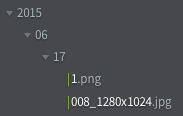
- 년도 폴더 안에, 월 폴더 안에, 일 폴더 안에 이미지 파일이 저장됩니다.
- 추가한 내용을 좀 더 크게 보겠습니다.
- 확인을 위해 upload_to="board/image"로 바꾸겠습니다.
- 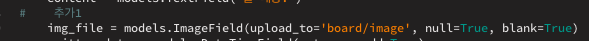
- 이미지를 저장하기 위해서는 setting.py에 추가해야 할 항목이 있습니다.
- 가장 하단에 아래 이미지와 같이 넣어주세요.
- 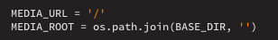
- 위 내용을 넣어줘야 이미지가 해당 경로로 저장이 됩니다.
- 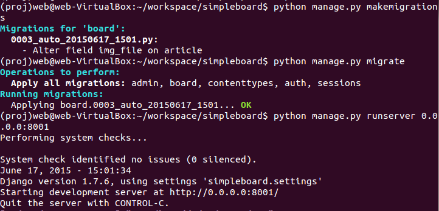
- model.py 파일이 변경됐으니, 서버를 다시 올려야겠네요.
- 다들 아시다시피
- python manage.py makemigrations
- python manage.py migrate
- python manage.py runserver 0.0.0.0:8000
- 이렇게 다시 서버를 올립니다.
- 이번엔 admin으로 들어가서 등록할 공간이 있는지 확인해보겠습니다.
- 192.168.56.101:8000/admin으로 들어갑니다.
(주소가 안먹네요..ㅠㅠ 이것도 이유를 모르니, 나중에 손볼께요..ㅠㅠ)
- 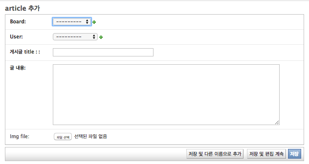
- 이렇게 맨 하단에 파일을 등록할 수 있는 공간이 있음을 알 수 있습니다.
- 하나 추가해서 넣어보겠습니다.
- 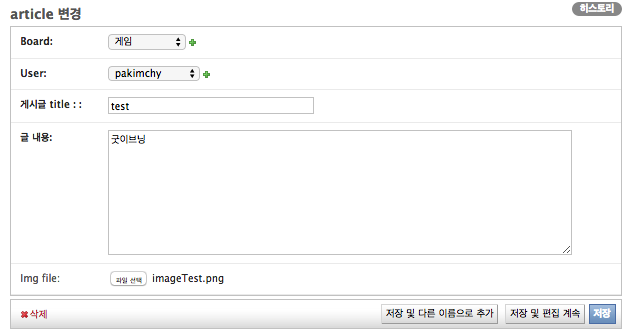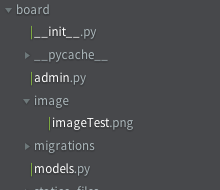
- 이렇게 파일이 저장되는 것을 보실 수 있습니다.
- 이제 admin에 추가된 이미지가 화면에 나오도록 해야겠죠.
- 그렇기 위해 article.html문서를 수정하겠습니다.
- 기존의 문서에서 {{article.content|linebreaks}}가 적혀 있는 곳의 아래에 (div)가 닫힌 곳 바로 아래에...
- 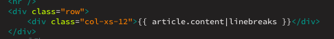
- 추가해 줍니다. 그 내용은 아래와 같습니다.
- 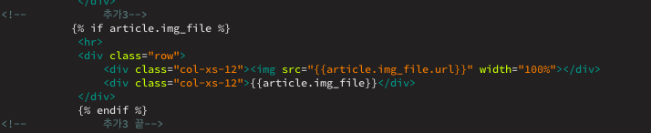
- 여기서 다시 article.html을 호출하는 부분을 살펴보겠습니다.(사실 urls.py - views.py - *.html 순으로 설명해야 하는데, 설명을 꺼꾸로 하겠습니다.)
- 호출하는 views.py를 확인해보겠습니다.
- 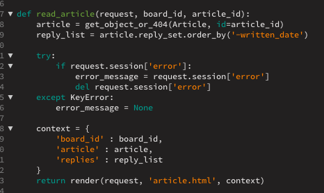
- article.html을 호출하는 views.py의 함수는 read_article함수 입니다.
- 하지만 우리는 model.py에서 Article 클래스에 이미지를 추가했기 때문에 더 손댈 필요가 없습니다.
- 이번에는 이 read_article함수를 호출하는 urls.py로 넘어가겠습니다.
- 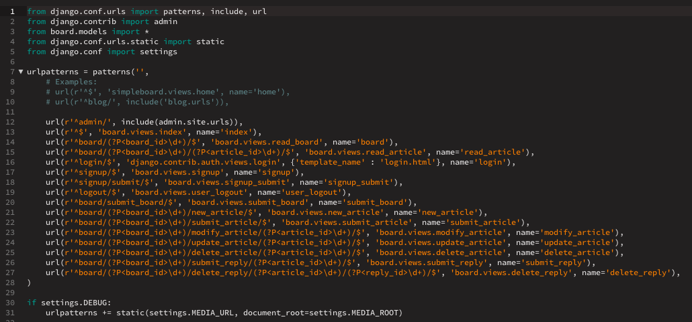
- 상속 받을 내용 2가지와 추가로 작성할 내용이 있습니다.
- 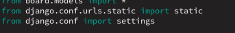
- static과 setting을 상속받고
- 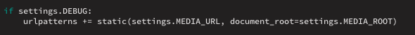
- 가장 하단에 위와 같이 써주면 됩니다.(기존에 있던 내용의 괄호 밖에...)
- 아직 admin에서 추가하는 방법까지만 익혔습니다.
- 조만간 2부도 올리겠습니다. submit 하는 방법을 익힌 후에...
- 타 사이트를 보며, 만들다 보니, 설명이 많이 부실합니다. 알게되면 알게되는 족족 업데이트 하도록 하겠습니다.
- 참조 사이트: Kay on the rails